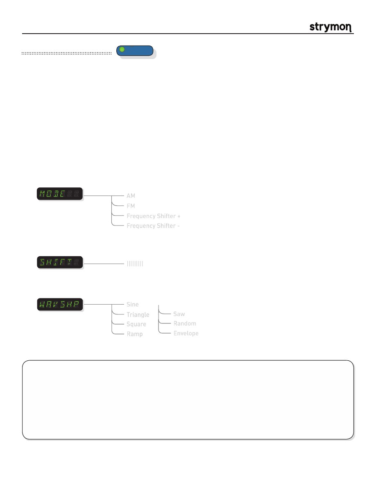

Mobius
-
User Manual
®
pg 19
TYPE
push (bank/BPM)
hold (save)
push (param)
hold (global)
VALUE
PARAM 1
PARAM 2
B
TAP
A
SPEED
DEPTH
LEVEL
BANK DOWN
BANK UP
FILTER
DESTROYER
VIBE
ROTARY
FLANGER
PHASER
CHORUS
FORMANT
AUTOSWELL
VINTAGE TREM
PATTERN TREM
QUADRATURE
®
Mod Machines: Quadrature
The Quadrature machine handles another spectrum of signal corruption featuring Quadrature oscillators. Choose from AM
(amplitude modulation), FM (frequency modulation), or Frequency Shifting (single side band modulation) to go where few
have gone before. This mode is highly flexible with a variety of waveshapes to modulate the modulation.
PARAMETERS:
TIPS & TRICKS:
The DEPTH knob sets the amount of modulation of the shift frequency. With the DEPTH at minimum,
the shift frequency is unaltered and set by the SHIFT param. Turning up the DEPTH will modulate the shift frequency.
This is most easily understood when heard with large SHIFT param settings, but will create many interesting sounds
with lower shift settings.
When the DEPTH knob is set to maximum, the shift frequency will approach 0 during the LFO cycle. Try using a SQR
LFO waveshape with a high SHIFT value and the DEPTH knob at maximum. One half of the square wave will sound like
input signal (when the shift frequency is 0) and the other half will sound like the effect at the shift frequency set by the
SHIFT param.
Mode
:
Selects the current Quadrature algorithm.
AM
– like a tremolo with a crazy-wide speed range. Also commonly referred to
as a Ring Modulator.
FM
– like a vibrato with a crazy-wide speed range.
Positive Frequency Shifter
– Offsets all frequencies by the same amount in the
positive direction.
Negative Frequency Shifter
– Offsets all frequencies by the same amount in the
negative direction.
Frequency Shifter -
AM
FM
Frequency Shifter +
Sine
Triangle
Square
Ramp
Waveshape
:
Selects the LFO waveshape to modulate the SHIFT param for the selected Mode.
Saw
Random
Envelope
||||||||
Shift
:
Sets the modulating frequency of the selected Mode. Mild effects are achieved at the
lowest settings, and more extreme effects come about at higher settings.